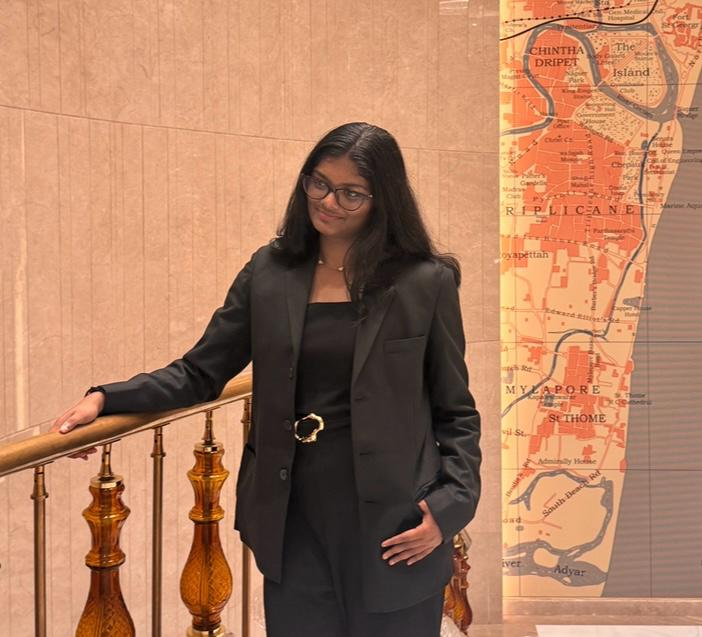
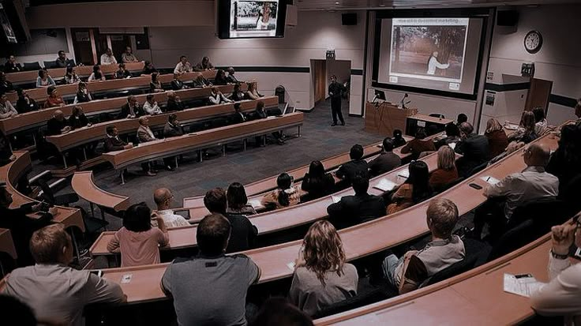
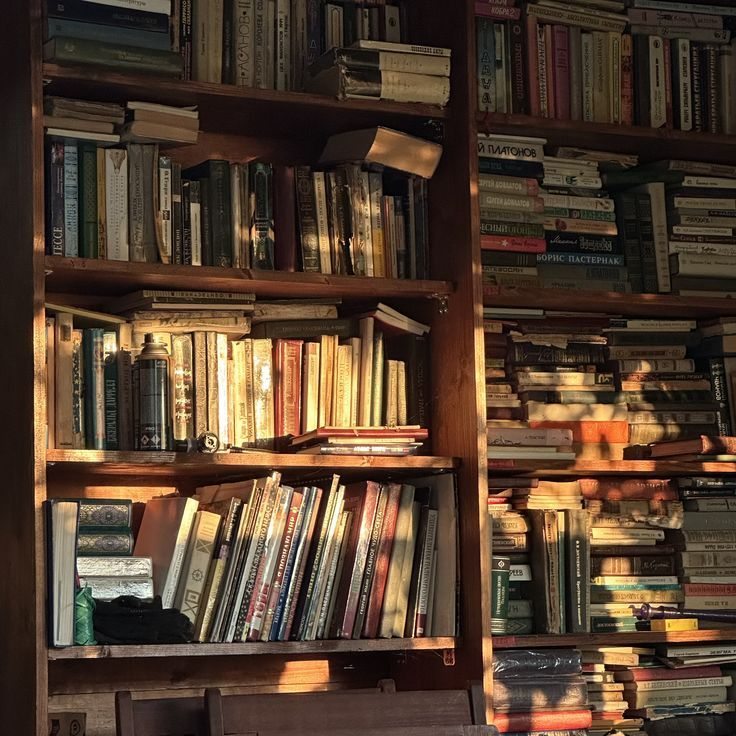
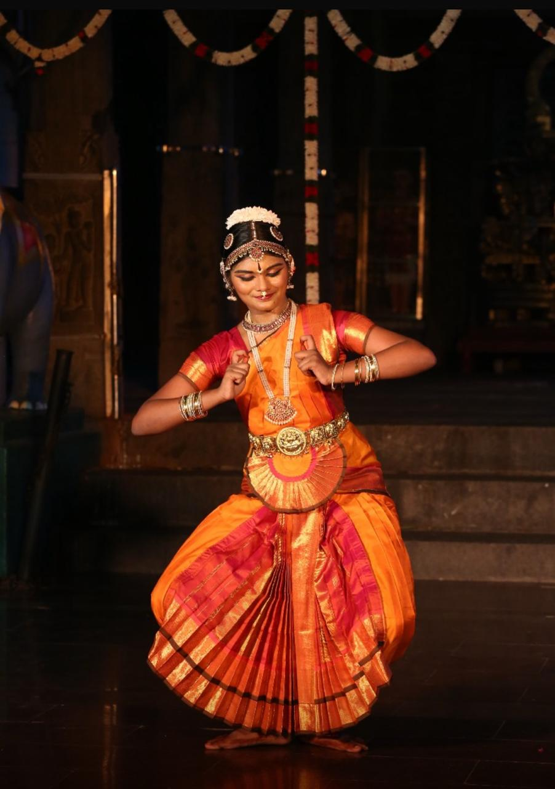
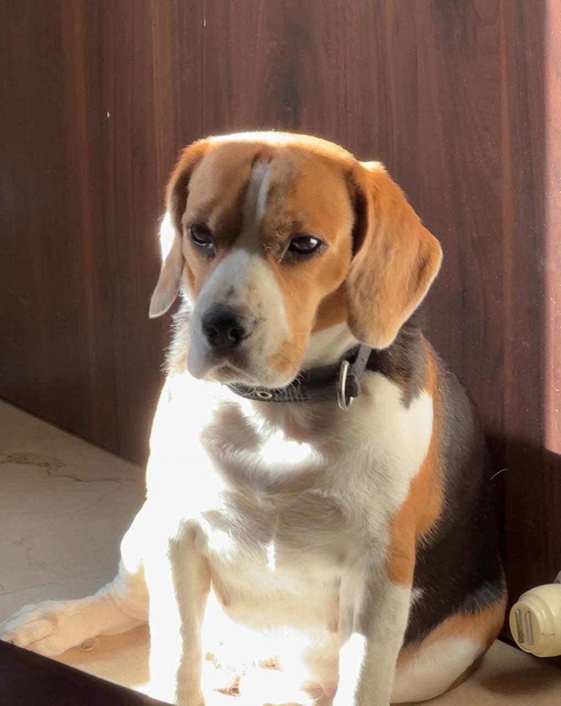
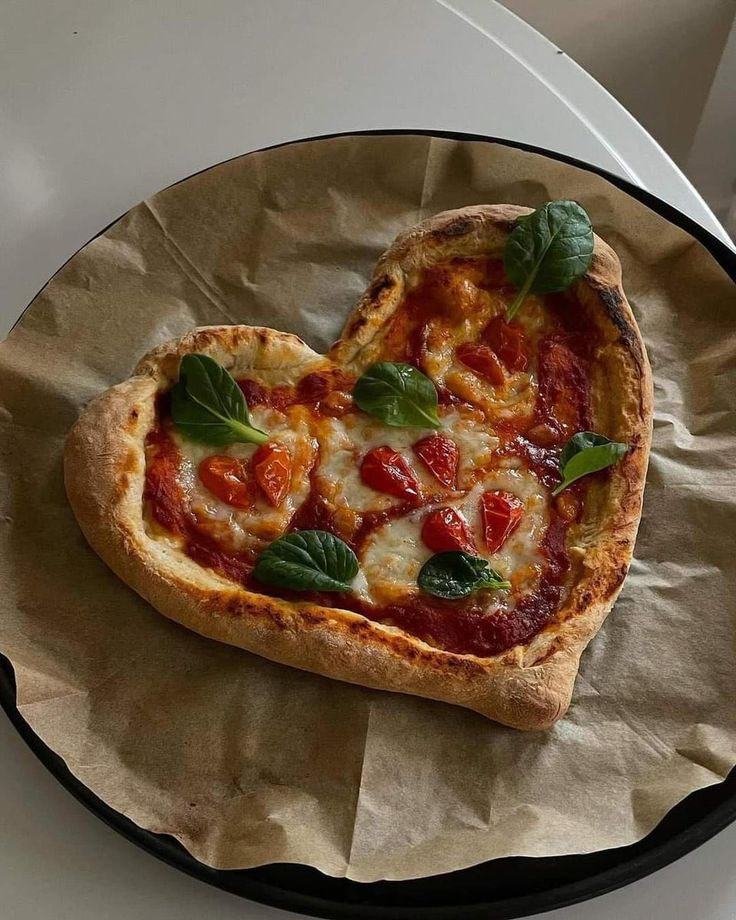
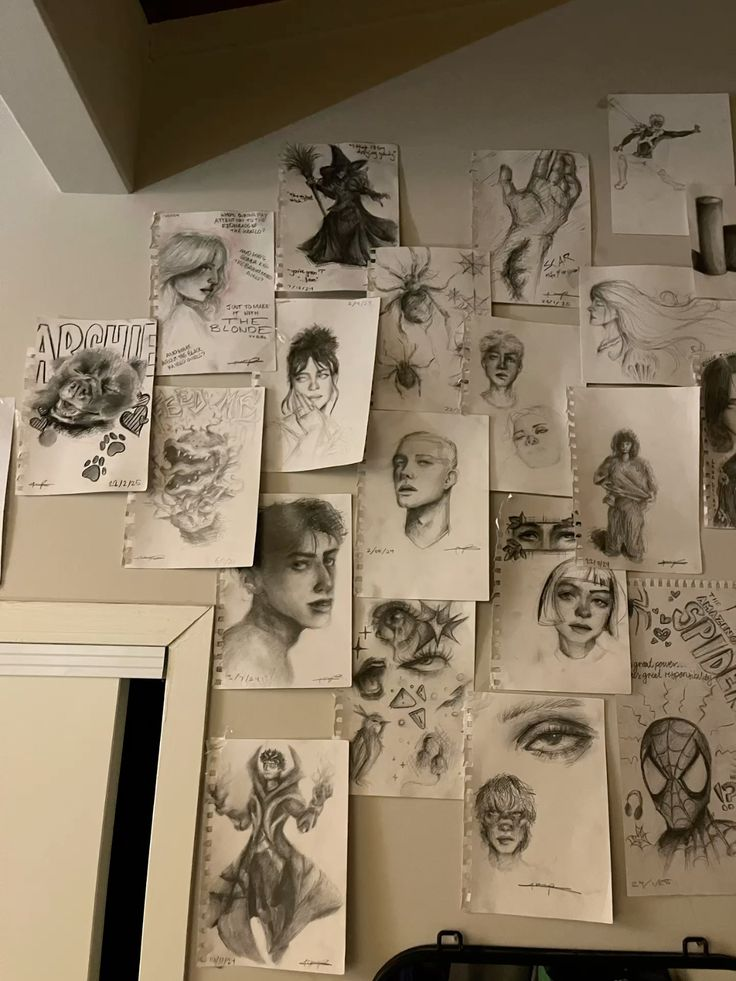

Developer • Storyteller • Creator
I’m a Computer Science student who moves between code, curiosity, and creativity. I’ve worked with Java, Spring Boot, and testing systems, and I’ve explored how software behaves both on the surface and underneath it through development and cybersecurity fundamentals. Outside of tech, I spend a lot of time with books, language, and observing details most people miss. I like building things that feel thoughtful rather than loud, whether it’s a system, a story, or a small idea that grows quietly into something meaningful.


SASTRA University
CGPA : 8.22
Sir Sivaswami Kalalaya Higher Secondary School
Percentage : 96.6%
Zenitus Technologies
Worked as a software intern where I contributed to development and testing tasks, including manual and automation testing using tools like Selenium and Appium, while gaining practical exposure to real-world application workflows.
Psiog Digital
01
A semantic job-matching platform
designed to connect people
with opportunities beyond keywords.
Tech Stack: React (Vite), TypeScript, Tailwind CSS, Django, MySQL, NLP-based matching logic
02
A digital library experience
blending storytelling,
organization, and design.
Tech Stack: Spring Boot, Thymeleaf, MongoDB, Java, HTML, CSS, Postman

Reading is more than a hobby for me; it’s a habit of curiosity. It’s where I learn, unlearn, and understand people, emotions, and worlds beyond mine.
Favourite books : Adelaide By Genevieve Wheeler, Wonder By RJ Palacio
Current Read : Alchemised By SenLinYu
Loud pop, cinematic soundtracks, and performance-driven music
Favourite Artists : Lady Gaga, TaylorSwift, TimbaLand, Britney Spears
Also trained in Carnatic Music
Cinematography takes the win-Knives Out, Cruella, The Shawshank Redemption, any Nolan movie.
I’ve always felt drawn to New York, a city that feels alive with ambition, creativity, and constant motion. To me, it represents possibility at its peak, where every street carries a sense of story, energy, and purpose. It’s the kind of place that feels fast, expressive, and endlessly inspiring.

My training in Bharatanatyam has been a journey of discipline and expression spanning over 10 years I have performed in over 35 stages across Tamil Nadu.
I enjoy traveling, especially discovering local food, exploring new places, and experiencing the comfort and uniqueness of staying in different environments.

Honey, my little sister, is someone I deeply care about. She adds so much joy and warmth to my everyday life and has a calming presence that makes even simple moments better. I enjoy spending time with her, taking care of her, and just having her around.

I have a strong love for food and enjoy exploring different flavors, but pasta is my constant favorite. No matter what I decide to eat, I somehow always end up going back to it.

I like sketching as a creative hobby. It’s not something I do professionally, but I enjoy the calm and focus it brings, and the freedom of expressing ideas through simple drawings.
LET'S CONNECT